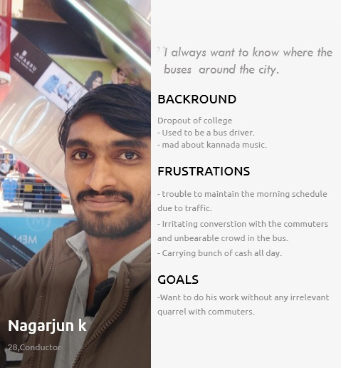
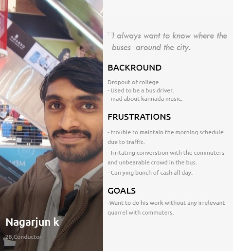

Product Vision
- Supply a reliable and a simple app which tell you exact location of the buses, so people are never late.
- Make a simple and a convenient way for the easy transaction of money between the commuters and conductors.
User Research
Since I had been travelling by bus to work for most of the time, I could find some commuters facing same kind of issues.
My research encompasses
- Understanding the day to day issues of the commuters.
- Roles and responsibilities of the conductors and drivers..
Survey Questions.
For commuters
Q1.Recall a time when a bus got delayed for a long time. What did you think or feel?
Q2. When a bus is delayed, what information would you want to know?
Q3.What is it that you feel when the bus conductor doesn't provide you with the change?
For Bus conductors
Q1.How difficult is it to manage people in a crowded bus?
Q2.Is it scary to carry a stack of cash all round the city for a whole day?
Q3. What is your opinion on the current practice of issuing tickets?
Personas.

 

Wireframes.
After spending some time with the everyday commuters and bus conductors and doing a complete research I came up with a complete task flows and made multiple iterations of the wireframes which led to the final one.
Wireframe flow of the app
The Solution.
After the all the research and keeping the pain points in mind, I tried to find the different solutions and kept the interface of the app as minimal as possible for to improve the experience of the app.
Welcome Screen
Discover Screen
Bus Info Screen
Bus Tracking Screen
Live Routes Screen
e-Ticket Purchase screen

The Conclusion.
After the all the research and keeping the pain points in mind, I tried to find the different solutions and kept the interface of the app as minimal as possible for to improve the experience of the app.